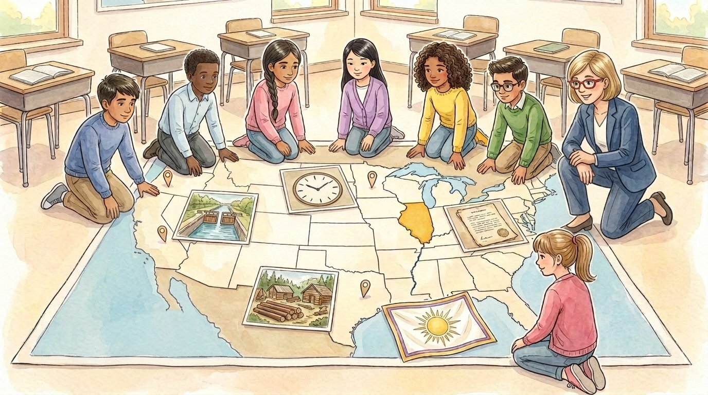

Grade 8 · Social studies · SS.6-8.H · CV · EC · G
The map that told many stories
A story about a giant map on the classroom floor, eleven pins and one question: what do all these stories have in common?
El mapa que contaba muchas historias. Un cuento sobre un mapa gigante en el suelo del salón, once alfileres y una pregunta: ¿qué tienen en común todas estas historias?
Social studies words you will learn
Tap a green word to see what it means.
Toca una palabra verde para ver qué significa. Con la ayuda activada, verás también la definición en español.
The story
El cuento está en inglés. Pulsa «Listen to the story» para escucharlo y toca las palabras verdes cuando no entiendas una.
On the last day before high school, Ms. Novak spread a giant hand-drawn map across the classroom floor. Illinois was in the middle. "This year, we read eleven stories," she said. "Each of you will put one on the map and tell us what it means."
Selena placed a small drawing of the plan of Washington. "Benjamin Banneker helped survey the capital," she said. "Then he wrote to Jefferson to point out the contradiction of slavery. When we read his letter, we asked who wrote it, why and for whom. That's how you read a ."
Athena put a tiny checkerboard on the middle of the country. "The Land Ordinance of 1785 divided the land into squares, with one square for schools." Next to her, Elías laid a copy of the Northwest Ordinance. "It made Illinois a free state and encouraged schools, but it broke its promise to the Native nations," he said. "A law is a promise. We have to check if it was kept."
Daniel put a paper canal boat between Chicago and LaSalle. "The canal made Chicago grow from 4,000 people to more than 100,000." Israel placed a cardboard clock on Chicago. "And in 1883, railroad leaders met here in Chicago and created time zones," he said. "Transportation changed how everyone lives."
Salma put a pin near the meeting of the Missouri and the Mississippi rivers. "Lewis and Clark started here, in Illinois. But the land wasn't unknown: many nations already lived there." "That's ," said Ms. Novak. "Who tells the story changes the story."
Sophia placed two pins on Springfield and one on Chicago. "Lincoln studied Euclid to learn to prove things, and he used the Declaration of Independence at Gettysburg," she said. "Illinois was the first state to ratify the Thirteenth Amendment, and in 1913 it was the first state east of the Mississippi where women could vote for president. changed because people argued, voted and marched."
Ms. Novak looked at the map, now covered with pins and drawings. "What do all these stories have in common?" "They're all about promises," said Athena. "Promises of equality, of schools, of rights. Some were kept, some were broken, and some took a long time." "And ," said Elías. "Some things changed fast, like the clocks, and some took decades, like the right to vote."
"Next year, you'll study more in high school," said Ms. Novak. "But remember: you're not just reading it. As , you'll help write the next part." Sophia closed her notebook and wrote on the last page: Ask who, why and for whom. Then decide what kind of citizen you want to be.
Glossary
- history
- The study of the past, based on evidence from sources.
- historia: El estudio del pasado, basado en la evidencia de las fuentes.
- source
- Anything that gives information about the past, like a letter, a map, a law or a photograph.
- fuente: Todo lo que da información sobre el pasado, como una carta, un mapa, una ley o una fotografía.
- perspective
- A point of view: the way a person or group sees an event.
- perspectiva: Un punto de vista: la manera en que una persona o un grupo ve un suceso.
- rights
- Freedoms and protections that the law promises to people.
- derechos: Libertades y protecciones que la ley promete a las personas.
- change and continuity
- What changes over time and what stays the same.
- cambio y continuidad: Lo que cambia con el tiempo y lo que permanece igual.
- citizen
- A member of a country, with rights and responsibilities.
- ciudadano: Un miembro de un país, con derechos y responsabilidades.
Questions
Choose the correct answer. If you make a mistake, the story shows you where the answer is.
Elige la respuesta correcta. Si te equivocas, el cuento te muestra dónde está la respuesta.
-
Question A. According to Selena, how do you read a source?
Según Selena, ¿cómo se lee una fuente?
When the class read Banneker's letter, they asked about its author, purpose and audience.
-
Question B. What did Elías say about the Northwest Ordinance?
¿Qué dijo Elías sobre la Ordenanza del Noroeste?
The law made Illinois a free state and encouraged schools, but it broke its promise to the Native nations.
-
Question C. What happened in Chicago in 1883?
¿Qué pasó en Chicago en 1883?
On October 11, 1883, railroad leaders met in Chicago and adopted standard time zones.
-
Question D. What did Ms. Novak say about perspective?
¿Qué dijo la Sra. Novak sobre la perspectiva?
The Lewis and Clark story looks different from the perspective of the Native nations who already lived there.
-
Question E. According to Sophia, why did rights change?
Según Sophia, ¿por qué cambiaron los derechos?
Lincoln argued, Illinois voted to ratify, and suffragists marched: people made the changes happen.
Challenge: explain your thinking
Connect the stories
Athena says that all the stories are about promises. Choose two stories from this book and explain, with evidence, which promise each one is about and whether it was kept, broken or kept only after a long time.
Conecta los cuentos. Athena dice que todos los cuentos tratan de promesas. Elige dos cuentos de este libro y explica, con evidencia, de qué promesa trata cada uno y si se cumplió, se rompió o se cumplió solo después de mucho tiempo.
Answer in your notebook or talk it over with a classmate. Use evidence from the story.
Responde en tu cuaderno o coméntalo con un compañero. Usa evidencia del cuento.
Check your thinking
Example: the Northwest Ordinance promised good faith toward the Native nations and that their lands would not be taken without consent; that promise was broken. The Gettysburg Address recalled the Declaration's promise that all men are created equal; the Thirteenth Amendment kept part of that promise in 1865, but full equal rights, including the right to vote for women, took much longer. Use dates and details from each story as evidence.